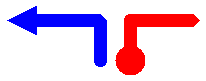

Перья, линии и прямоугольники в GDI+
Чтобы нарисовать линии с GDI+ необходимо создать Graphics объекта и Pen объекта. Graphics Объект предоставляет методы, которые фактически выполняют рисование, и Pen объект сохраняет атрибуты, такие как цвет, ширину и стиль.
Рисование линии
Чтобы нарисовать линию, вызовите DrawLine метод Graphics объекта. Pen Объект передается в качестве одного из аргументов DrawLine метод. В следующем примере рисуется линию из точки (4, 2) в точку ("12", "6"):
myGraphics.DrawLine(myPen, 4, 2, 12, 6);
Warning
It looks like the sample you are looking for does not exist.
DrawLine — перегруженный метод Graphics класса, поэтому существует несколько способов передачи аргументов. Например, можно создать два Point и передать Point объектов в качестве аргументов DrawLine метод:
Point myStartPoint = new Point(4, 2);
Point myEndPoint = new Point(12, 6);
myGraphics.DrawLine(myPen, myStartPoint, myEndPoint);
Warning
It looks like the sample you are looking for does not exist.
Создание объекта Pen
Можно указать несколько атрибутов, при создании Pen объекта. Например, один Pen конструктор позволяет указать цвет и ширину. В следующем примере рисуется синяя линия от ширины 2 от (0, 0) для (60, 30):
Pen myPen = new Pen(Color.Blue, 2);
myGraphics.DrawLine(myPen, 0, 0, 60, 30);
Warning
It looks like the sample you are looking for does not exist.
Пунктирные линии и завершения отрезков
Pen Объект также предоставляет свойства, такие как DashStyle, можно использовать для указания свойства линии. В следующем примере рисуется пунктирная линия с (100, 50) к (300, 80):
myPen.DashStyle = DashStyle.Dash;
myGraphics.DrawLine(myPen, 100, 50, 300, 80);
Warning
It looks like the sample you are looking for does not exist.
Можно использовать свойства Pen объекта можно задать многие атрибуты линии. StartCap И EndCap свойства определяют внешний вид концах линии; может заканчиваться неструктурированный square, треугольником, или пользовательской фигуры. LineJoin Свойство позволяет указать ли соединенных линий углом (присоединение с острые углы), скошенные, округленное или обрезается. Ниже показаны строки с использованием различных стилей завершения и соединения.

Рисование прямоугольника
Рисование прямоугольников с GDI+ похоже на рисование линий. Чтобы нарисовать прямоугольник, вам потребуется Graphics объекта и Pen объекта. Graphics Предоставляет DrawRectangle метод и Pen объект сохраняет атрибуты, такие как толщины и цвета. Pen Объект передается в качестве одного из аргументов DrawRectangle метод. В следующем примере рисуется прямоугольник с его верхнего левого угла в (100, 50), ширины 80, а высота — 40:
myGraphics.DrawRectangle(myPen, 100, 50, 80, 40);
Warning
It looks like the sample you are looking for does not exist.
DrawRectangle — перегруженный метод Graphics класса, поэтому существует несколько способов передачи аргументов. Например, можно создать Rectangle и передать Rectangle объект DrawRectangle метод в качестве аргумента:
Rectangle myRectangle = new Rectangle(100, 50, 80, 40);
myGraphics.DrawRectangle(myPen, myRectangle);
Warning
It looks like the sample you are looking for does not exist.
Объект Rectangle содержит методы и свойства для обработки и сбора сведений о прямоугольника. Например Inflate и Offset методы изменять размер и положение прямоугольника. IntersectsWith Метод указывает, является ли прямоугольник пересекается с другим указанным прямоугольником и Contains метод указывает, является ли заданная точка находится внутри прямоугольника.